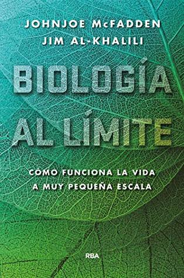

Biología al límite
Reseña por Jorge I. Zuluaga

Ver detalles · Ver reseña en GoodReads (necesita cuenta)
Qué buena lectura y qué buen nivel el de este libro.
El libro, como seguramente sabrán si han leído la contraportada o expurgado un poco el índice, hace una relación de los fenómenos biológicos —o bioquímicos, ¿hará la diferencia?— en los que la investigación científica de los últimos 70 años, en especial de las últimas dos décadas, ha revelado que podrían ser determinados —directamente y no a través de una cadena compleja de propiedades emergentes— por efectos cuánticos. Desde el poder catalítico de las enzimas biológicas —¡sí! ¡así! ¡en masculino!—, las moléculas más importantes de la vida, como terminé convenciéndome después de leer este libro, pasando por el funcionamiento del olfato, la fotosíntesis, la orientación de algunas aves y mariposas usando la luz y el campo magnético de la Tierra, las mutaciones genéticas —un cierto tipo de ellas que desconocía hasta leer este libro—, hasta llegar a las cuestiones más difíciles de la biología contemporánea, como lo son el origen de la vida y la naturaleza misma de la conciencia.
Si me hubieran preguntado hace un par de semanas cuáles eran las cosas de las que hablaría el libro, le habría atinado posiblemente a dos o tres. Nunca imaginé que fueran tantas.
Hay que decir honestamente que "Biología al límite" no es un libro fácil de leer, pero tampoco es un libro estrictamente técnico. Creo que personas con una formación básica en biología —como es mi caso— y conocimientos mínimos de teoría cuántica —aunque soy físico, no encontré en el libro nada extremadamente complicado— podrán entenderlo en su totalidad, al menos si tienen suficiente paciencia y lo leen con cuidado.
Una cosa importante: el texto no tiene una sola ecuación. A duras penas encontrarán un par de diagramas cartesianos. Realmente me quito el sombrero delante de sus autores por lo que lograron.
El estilo de escritura es entretenido y bastante claro. Me encantaron las analogías, tanto las que usan para explicar los conceptos más difíciles de biología y química que incluye el libro, como las que usan para la parte de física —que supuestamente conozco mejor— y que me "robaré" para mis propios escritos y clases.
La explicación, por ejemplo, del experimento de la doble rendija, uno de los más importantes de la historia de la física para describir la extraña naturaleza de la teoría cuántica, es increíblemente clara y completa. ¡Me la quedo!
Todos los capítulos comienzan con una historia, en apariencia desconectada de lo que se espera es el contenido principal, pero que a la larga termina conectándose de forma inesperada con el tema. Esto le da al texto una continuidad y solidez narrativa que es propia de la buena literatura divulgativa. Por eso insisto, aunque parece un libro medianamente técnico de biología cuántica, es un gran libro de no ficción sobre la frontera entre la vida y el mundo físico.
La combinación de las especialidades de sus dos autores —Johnjoe McFadden es biólogo y Jim Al-Khalili es físico— hace que el texto contenga referencias a fenómenos naturales de los que se ocupan muchas especialidades. Comenzando naturalmente por la biología celular, la bioquímica y la física atómica y molecular, pero sin restringirse únicamente a ellas. En el texto encontramos un poco de todo: algo de geofísica allí, un poco de astrofísica allá, física de materiales acullá. Y así: evolución biológica, neurociencias, química básica, hasta psicología. Realmente un salpicón delicioso para quienes amamos las ciencias y la divulgación científica.
El capítulo que menos me gustó, "¿Qué es la vida?", creo yo, es uno de los más importantes del libro. También es el primero que te encuentras después de leer una excitante introducción que, en un estilo muy pedagógico, recapitula muchos de los temas que se tratarán en el resto del libro. Esto me desanimó un poco al principio —después del electrificante inicio— y podría desanimar a más de una persona que lo lea. Tal vez sea porque las expectativas que todos tenemos sobre esta, la pregunta del millón de dólares, es demasiado alta. O quizás es porque creía que esta sería una de las piezas claves del rompecabezas de cómo se conecta la vida con los fenómenos cuánticos. ¡Y sí! Pero eso lo dejan para el final. Lo cierto es que este capítulo termina mucho antes de lo que hubiera querido. Esperaba que se profundizara mucho más en la definición. Aún así, a la larga, descubrí que esta sección aborda el material suficiente para lo que se necesitará en el resto del texto.
Otra analogía que me encantó fue la que usan para explicar cómo funciona la función de onda y la información que ella nos provee, al menos según la regla de Born y la interpretación de Copenhague. Ya lo he dicho como tres veces, pero creo que seguiré usando esta, y las demás analogías mencionadas antes, en mis artículos y cursos. ¡Gracias, don Jim!
Con este libro, por fin, entendí qué eran los puentes de hidrógeno. ¡Uf! Un enlace químico en el que lo que se "comparte" es un protón y no un electrón. ¡Qué nota!
El capítulo más duro, el que está dedicado a la fotosíntesis: "La pulsación cuántica". El capítulo más increíble, el dedicado al funcionamiento del olfato: "Buscando la casa de Nemo". El capítulo más perturbador, el de la genética: "Genes cuánticos" —tal vez estamos aquí por culpa de fluctuaciones cuánticas en el ADN de nuestros antepasados—. El capítulo más extraño, aquel que muestra cómo algunos animales usan efectos cuánticos para hacer migraciones: "La mariposa, la mosca del vinagre y el petirrojo". El capítulo imperdible, la síntesis final en "Biología cuántica": ¡qué capítulo!
Me encantó el guiño que hacen los autores al feminismo, cuando en el capítulo dedicado a la conciencia, "Mente", presentan el ejemplo de una artista del paleolítico. Es todavía muy fácil caer en el estereotipo de pensar que las pinturas rupestres fueron elaboradas por varones, todo a pesar de que las evidencias demuestran que era una actividad si no más equitativa, incluso pudo haber sido mayoritariamente femenina. Pero el hecho de que los autores hayan aclarado que se imaginan a una mujer haciéndolo me demostró que son personas conscientes de los sesgos androcéntricos de la ciencia. ¡Bien por ellos!
Este libro es perfecto para montar buenos cursos en la frontera entre teoría cuántica y biología. Si son profes en facultades de ciencias, no duden en leerlo ya y buscar partners para montar un buen curso. Estoy seguro de que tanto estudiantes de física como de biología y química estarían encantados de disfrutar de esta mezcla tan especial de sus disciplinas.
La mecánica cuántica es normal. Es el mundo que describe lo que es extraño.